Final Project
December 13, 2021
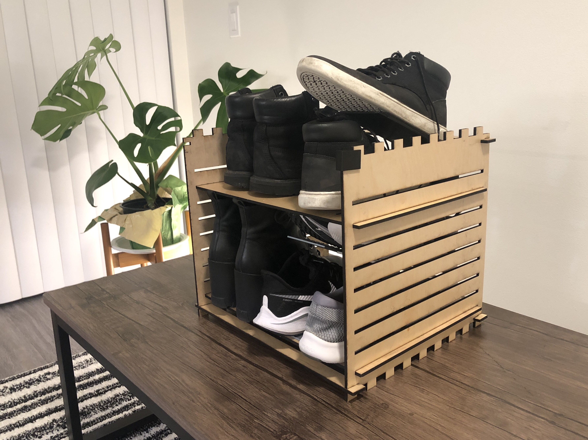The Goal
Design and prototype two shoe storage devices: a shoe rack and shoe stackers.
Design Concept
Motivated by usability, for this solo final project, I created a stackable laser-cut shoe rack and a 3D-printed shoe stacker.
I wanted to create something functional that would make my personal space more organized and efficient, and I was also interested in creating something that others could easily recreate and utilize by downloading my openly available Illustrator and STL files (on my GitHub! ).
Here were my key design decisions:
-
The shoe rack's design must be shelf-height adjustable.
- Shoes come in different sizes and heights.
-
The shoe rack must be stackable.
- When more storage is needed, users should be able to cut another rack and place it on top of the previous one. No modification to the rack’s design should be needed.
-
The shoe stacker should be compatible with different types of shoes.
- Greater compatibility with different shoes makes the design more versatile and applicable to the user’s closet.
-
The shoe stacker should print without support material.
- Reduce material waste and printing time.
-
The shoe stacker should fit in the shoe rack.
- Both devices should work together!
Project Goals
There were four main components to the final project:
- stackable laser-cut shoe rack
- 3D-printed shoe stacker
- user test(s) for usability
- 1-minute video demonstration
Initial Sketches and Preparation
Before I dove into prototyping, I began with a few initial sketches of my devices to illustrate what I had in mind.
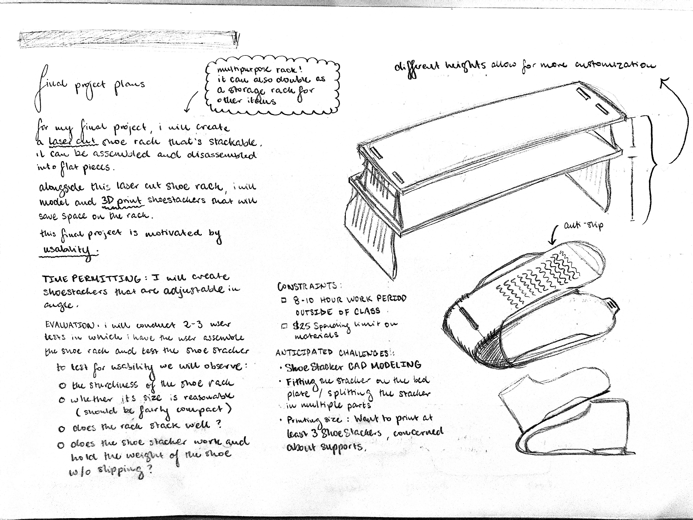Idea sketches.
I continued by taking measurements of my space and shoes to get an estimate of how big the shoe rack and shoe stackers should be. Once I recorded these measurements, I sketched more final versions of both the shoe rack and stacker in my sketchbook with rough dimensions. From there, I began working on the CAD model for the shoe stacker.
Making the 3D-Printed Shoe Stacker
I modeled the shoe stacker in SolidWorks, splitting the device into two parts, the stacker and the anti-slip patch that would be glued to the top of the stacker, to eliminate the need for support material.
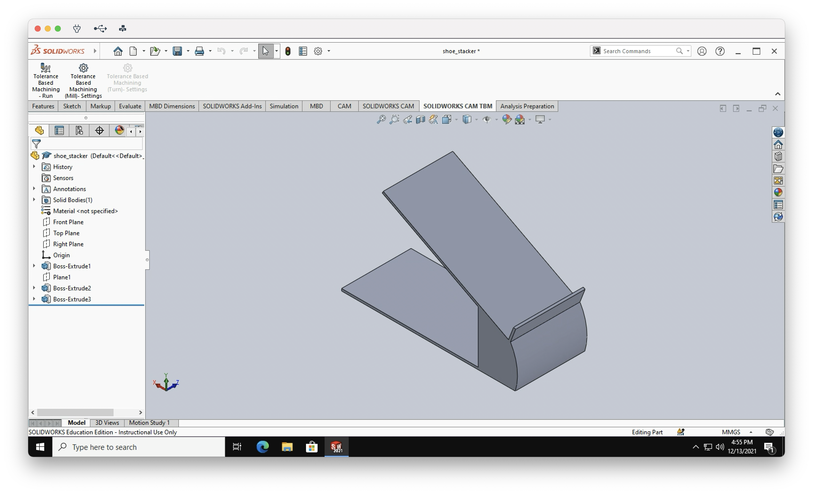Shoe Stacker CAD
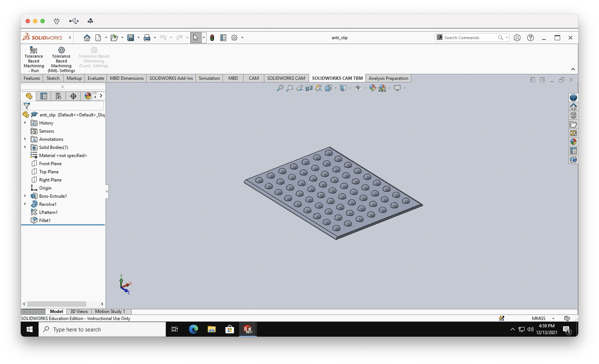Anti-Slip Patch CAD
Once these pieces were modeled, I started the 3D-printing process. It’s approximately 9 hours of printing total for both parts. The stacker printed without issue, but I ran into a few bed plate adhesion issues with the anti-slip patch and realized that my silver filament wouldn’t print the model properly. I fixed the bed plate adhesion issue by printing one patch at a time instead of two, and my other two rolls of filament printed the model successfully. On my first test print of the anti-slip patch, the circular grippy components would fall off the base. This was resolved by increasing the base’s thickness in the CAD model.
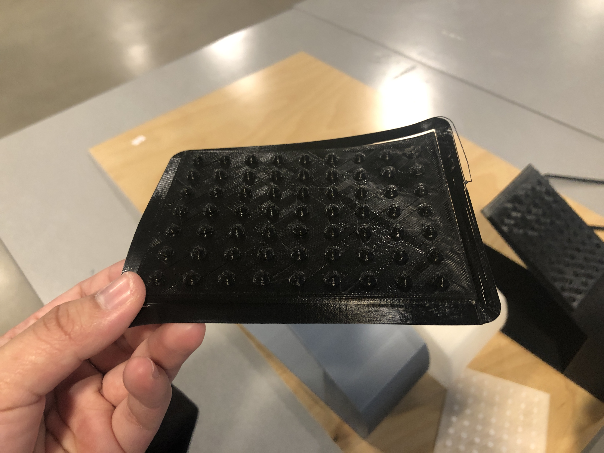Anti-Slip Patch Failed Print
After fixing the anti-slip patch, I used tape to secure the patch onto the stacker, and then tested for durability by inserting my heaviest shoes into the stacker. The stacker did not break and shoes did not slip off the top! From there, I repeated the above prints twice to have 3 stackers in total. The stackers can stack into each other to save space!
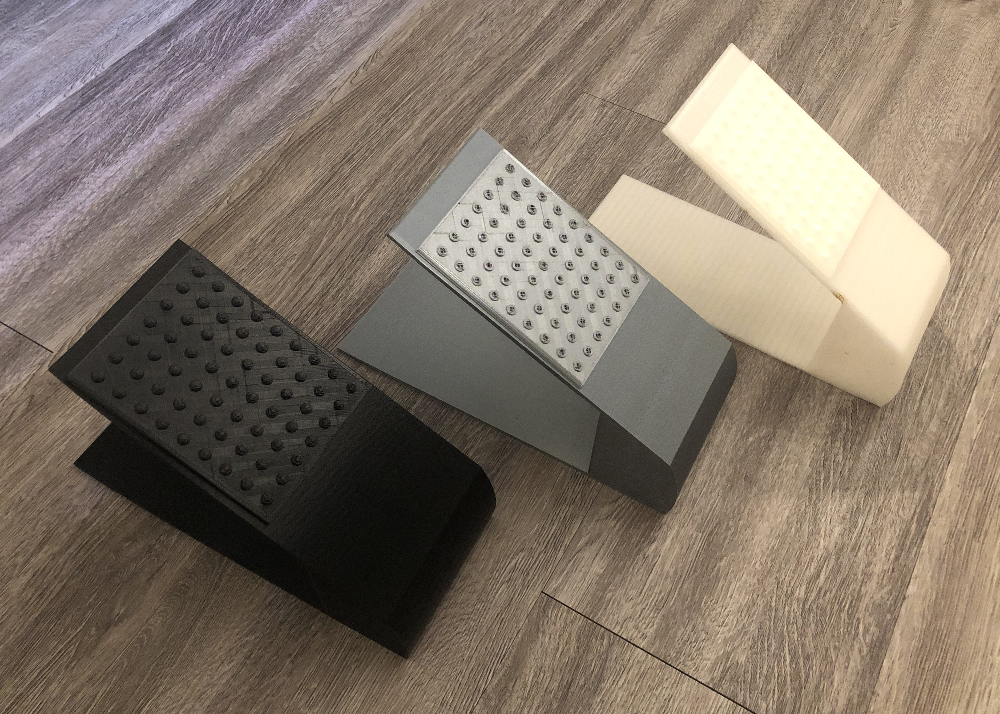Shoe Stackers
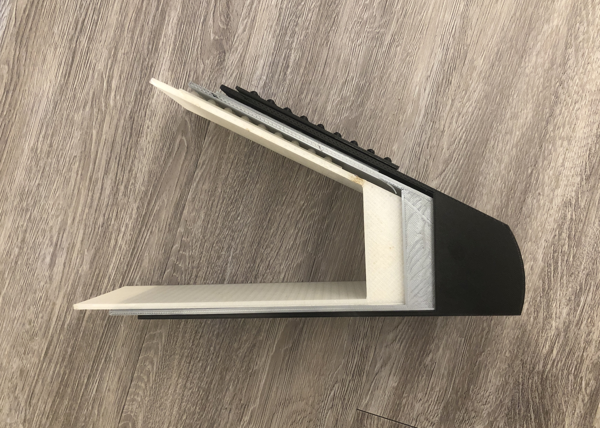Shoe Stackers Stacked Into Each Other
Making the Laser-Cut Shoe Rack
The shoe rack was the most challenging part of my project.
I first designed how the shoe rack would stack. The top component of the shoe rack must allow the bottom of another shoe rack to sit on top. Designing in Illustrator, I created notches on the top and bottom edges of the side legs. These notches would fit together when stacked and would be secured with a clip.
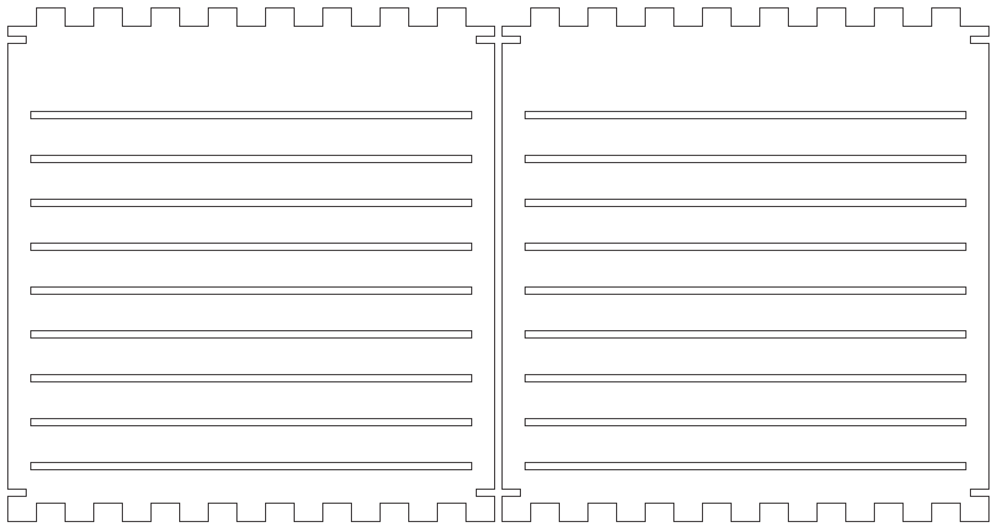Shoe Rack Side Legs
I made the shoe rack shelf-height adjustable by creating 9 different slots where the user could insert 1-2 racks. To change the shelf height, the user would simply slide out one shelf piece and slide it through another slot.
My goal was to laser-cut all components for the rack, so I created a number of clips to secure parts in place and tested several different fits. Once I found a good fit, I cut multiples of the different kinds of clips I would need: ones to secure the shelves in place and ones to connect stacking racks. After cutting all clips, I realized that laser-cutting was a poor choice for making clips, because the edges of the material wear down over time, making the fit loose. This defeated the purpose of using a clip to hold materials together. I resolved this issue by modeling and 3D-printing the needed clips.
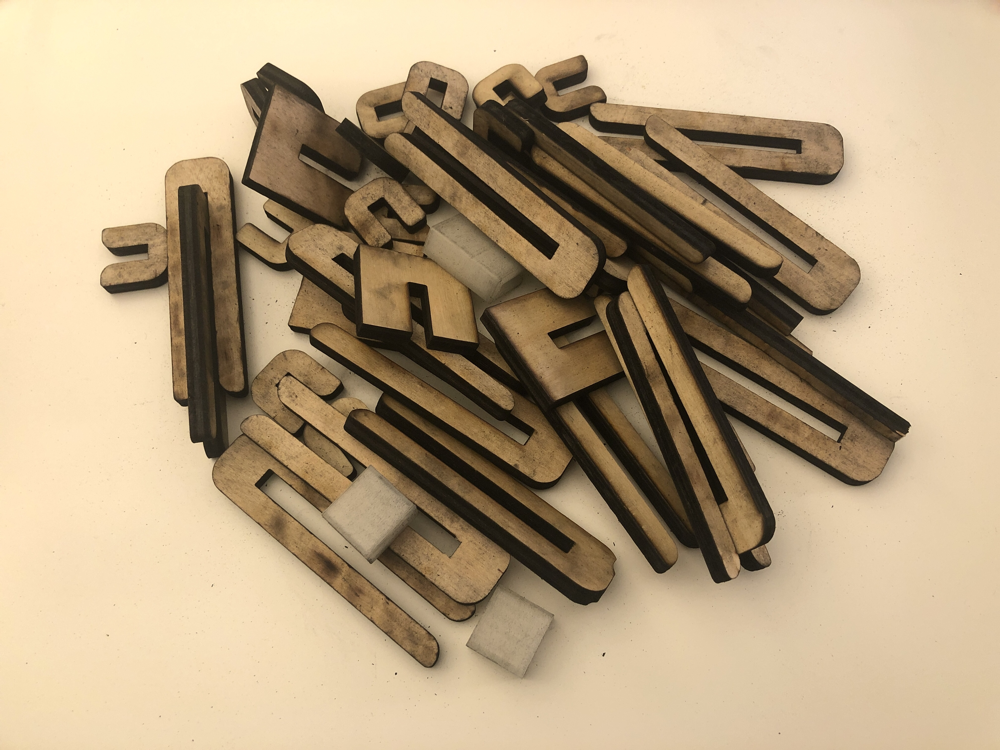Myriad of laser-cut(and some 3D-printed) clips tested on the shoe rack
Once the side legs, shelves, and clips were cut, I finished everything I had planned to make for the shoe rack, but once I assembled it, I realized it wasn’t sturdy. Even though the shoe rack was functional, it would wobble and sway back and forth.
I resolved the wobble by cutting the side leg pieces to include a notch along the left and right edges at the top and bottom. I placed laser-cut bars at these notches that would connect both side leg pieces and used the cut out wood from the slots to create cross bars on the back of the rack. The cross bars would be held in place by 3D printed clips as shown below. These temporary changes made the shoe rack sturdy, and now it was complete! The next step was creating the video demo and user evaluation.
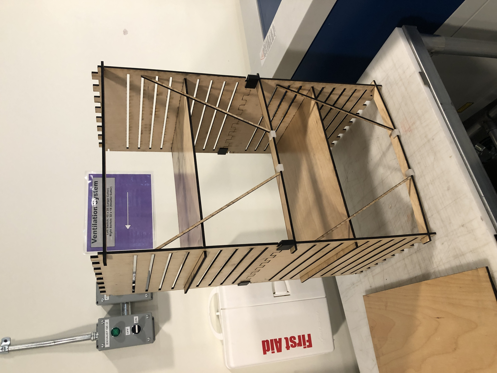Shoe rack with cross bars
Creating the Video Demo
There was a lot to fit into a 1-minute video demo, so I made a checklist of things I wanted to include and then I storyboarded!
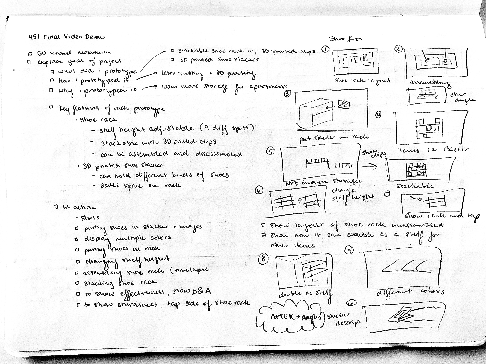Video Planning
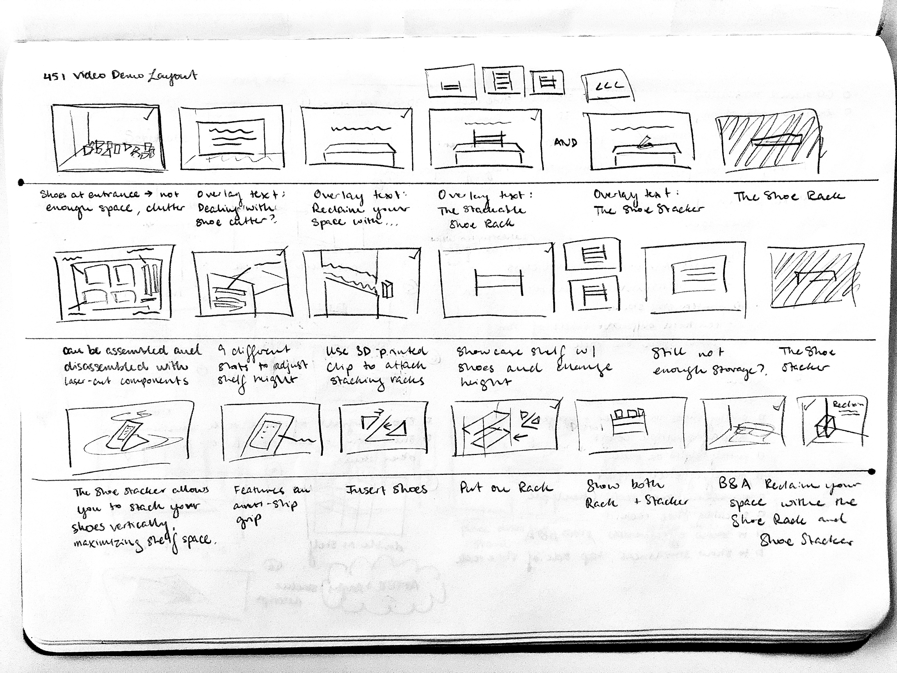Storyboarding
From there I recorded and edited. Here's my demo video!
Evaluation and Testing
Outside of receiving critique from my peers in class, I conducted one user test with a neighbor in my apartment building. I focused on testing the usability of both organizer tools. I encouraged the user to think aloud throughout the test.
For the 3D-printed shoe stacker, I wanted to evaluate whether it could withstand the weight of different kinds of shoes without breaking, hold shoes in place without slipping, and see how well it fits on the shoe rack. This was tested by having the user insert each of their shoes in the 3 stackers I provided and having them place the stackers on and off the shoe rack.
For the laser-cut shoe rack, I wanted to evaluate how easy it was to assemble, how many shoes it could hold on each tier (with and without stackers), and how sturdy it is. To do this, I had my user assemble the shoe rack, change shelf height, stack another shoe rack on top of the first one, and comment on overall sturdiness.
User Testing Feedback and Critique
Here is the feedback from my one user test and critique received from classmates as I worked on the final project and during the final showcase.
User Test, Shoe Stacker:
-
Withstanding weight of different shoes
- 4/4 pairs of the user’s shoes were successfully held without stacker breakage.
-
Holding shoes in place without slipping
- 3/4 pairs of the user’s shoes held onto the stacker without slipping.
-
Fit on shoe rack
- 4/4 pairs fit on the shoe rack.
User Test, Shoe Rack:
-
Ease of assembly
- User said that the shoe rack is difficult to assemble because the shelves don’t slide easily into the slots. They mention that installing the crossbars in the back is confusing, because there is not a clear place to put them. They gave assembly a 1/5 rating for ease of assembly (1 being very difficult and 5 being very easy).
-
Number of pairs of shoes held on each
shelf with and without stackers
- Each shelf can hold 2 pairs of shoes without stackers and 3 pairs with stackers. The user’s shoes are larger than mine, so both pairs might not sit flat on the shelf.
-
Changing shelf height
- User moved one shelf into another slot and said that it was annoying to switch out since the slot fit is too tight. They mention that they would likely determine their shelf height before using the rack and then keep shelf height as is after assembly to avoid having to change shelf height.
-
Stacking shoe racks
- The user easily stacked the second shoe rack on top of the first one with no issue.
-
Comments on sturdiness
- Without the crossbars in the back, the shoe rack is very wobbly. It could still hold items on the shelves, but the user wouldn’t put anything valuable on the rack in case the rack falls over. The shoe rack is much sturdier when the crossbars in the back are installed.
General Comments from the User Test:
- There should be a ledge that prevents shoes from falling off of the shoe stacker.
- The user would like to remove a stacker from the rack without having to touch the sides of their shoe.
- How to install the crossbars on the shoe rack should be made clearer.
- The clips to connect stacking shoe racks should be a tighter fit so that the user can lift up the shoe rack from the top rack.
- Overall, the shoe rack is nice and provides a good place to store things.
Feedback from Classmates:
- “It’s really large! Consider scaling the shoe rack’s size down so it’s shorter.”
- “Instead of changing the model of the stacker, you can model clips to attach on the sides.”
- “Shoes might slip out of the bottom when you remove the stacker from the rack so think about adding an anti-slip patch to the bottom of the stacker too.”
- “I would totally use this! Could you forward me the files?”
Overall message from feedback is to make the shoe rack easier to assemble and to ensure that shoes don’t slip off or slide out of the stacker.
Analysis
What Worked Well:
- Both prototypes are functional!
- The shoe stacker prints without support material.
- People that saw the shoe stacker mentioned that they would use it.
- 3D-printed clips are much more successful than laser-cut clips. The print offers greater flexibility.
- The shoe rack is capable of holding a lot of items and is very sturdy when stabilized with cross bars.
What Needed Improvement:
-
The shoe rack could be easier to assemble.
- Next Time: I would cut the slots to be larger so that the shelves slide in more easily. I would also redesign the shoe rack to include permanent crossbars (the current crossbars are a temporary solution) and indicate where they would be installed with engravings.
-
The shoe stacker could grip onto the shoes better so that they don't slip.
- Next Time: I would add an anti-slip patch to the bottom portion of the stacker, and I would remodel the stacker to include a ledge on top to prevent the shoe from slipping off the stacker. I would also model and print clips to attach to the sides that would allow the user to pull out the stacker more easily from the shoe rack.
What I Would Do Differently Next Time:
- I would allocate time for uncertain issues that may arise during the prototyping process. I allocated 10 hours outside of class to work on making the prototypes (excluding video, user testing, blog, and report), but spent closer to 15 hours.
- Allocate more time for video filming and editing. I expected the filming and editing process to go by faster.
- Check my design for any potential structural issues to prevent wobbling.
Overall, it was a fun project, and I'm glad to have more storage space now!
Would you like to make the shoe rack and/or shoe stackers? All files can be found on my GitHub!